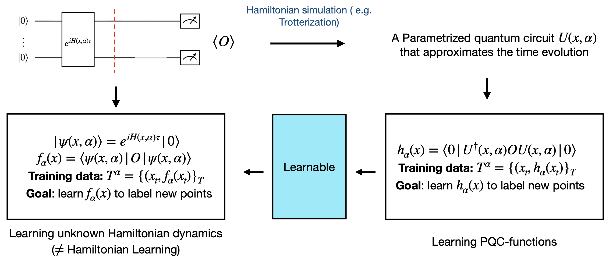

Thomas Lagoutte- ‑Ferré
M2 QMI · Institut Polytechnique de Paris
Supervisor: Prof. Koji Terashi
International Center for Elementary Particle Physics (ICEPP) · The University of Tokyo
The Learning Problem
Setup:
We observe classical samples from an unknown quantum process: $$\mathcal{T}^{\alpha} \;=\; \bigl\{(x_j,\,y_j)\bigr\}_{j=1}^{T}, \qquad y_j \;=\; f_\alpha(x_j) \;=\; \mel{0}{U^\dagger(x_j,\alpha)\,\hat{\mathcal{O}}\,U(x_j,\alpha)}{0}$$ where $x$ encodes the Hamiltonian structure (topology, couplings) and $\alpha \in [0,1]^d$ are unknown global parameters (e.g. coupling constants).Formal Objective
$f_\alpha(x)\;=\;\mel{\psi_0}{U^\dagger(x,\alpha)\;\hat{\mathcal{O}}\;U(x,\alpha)}{\psi_0}$
Input $x$
Graph topology
Unknown $\alpha$
Coupling constants
Label $y$
Exp. value
Why hard classically?
Evaluating $f_\alpha(x)$ may be BQP-hard. Classical ML must approximate a function it cannot efficiently compute.
Why physically natural?
Data has direct physical meaning. Natural in HEP lattice models where $\alpha$ = coupling constants.
Central question: Can quantum access to $H$ yield an exponential learning advantage over all classical algorithms?
Learning Pipeline

Learning Hamiltonian dynamics
Learn $f_\alpha(x)$ from classical data. No quantum state copies. Black‑box access to $e^{-iHt}$.
≠ Hamiltonian Learning
We do not recover $\alpha$. We predict observables — a strictly weaker, more practical task.